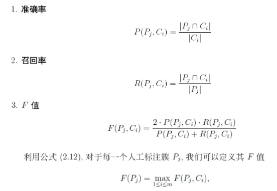

一般分为两类：
- 外部标准：即基于人工的判断，需要有个标注集合
- 内部标准：基于类内和类间聚类的目标函数的判断
内部标准clustering-performance-evaluation
外部标准——人工判定
假设：
机器判断的类别集合是：\(C=\{C_1,C_2,...C_m\}\)
人工判断的类别集合是：\(P=\{P_1,P_2,...P_s\}\)
1.1混淆矩阵
基于数据样本点的角度：
对于任意两个数据pair，\((x_i,x_j)\)按照其在C和P中是否属于同一个簇，可以构造出混淆矩阵

1.2簇的准确率/召回率
基于簇pair的，考虑对任意一个人工与机器的.\(P_j,C_i\)。对于每一个人工标注的\(P_j\),在机器标注中应该都会对应一个"最相关的"。可以遍历C中所有的cluster，分别计算准确率，召回率，F_score。

然后对于所有簇的F值做加权平均
\[ClassF=\sum w_j F(p_j), w_i=n_j/n\]
classF指标，相当于是以人工标注的簇为基准，将聚类的簇尽量逼近这个标注的结果。
1.3
1.2中的方法相当于要求的比较严格，即以人工标注的集合簇为准。
实际中其实只要保证我们聚的每一个类\(C_i\)是有意义的就可以，即以C为主
类似的定义 \(F(C_i)=\max_{1\lt j \lt s}F(P_j, C_i)\)
\[F=\sum w_i F(C_i), w_i=|C_i|/n\]
1.4基于数据对象的准召F

思考
- 基于人工标注的方法中，认为人工标注的是准确的或者说结果是唯一的。实际上一堆sample可以有不同的分类方法，而且每种方法可能都是对的。
e.g 苹果维修， 冰箱维修，苹果价格，冰箱价格，中国人民大学
如何进行标注，或者标注结果是非固定时候怎么衡量聚类效果的好坏？？
参考资料
http://blog.csdn.net/itplus/article/details/10322361